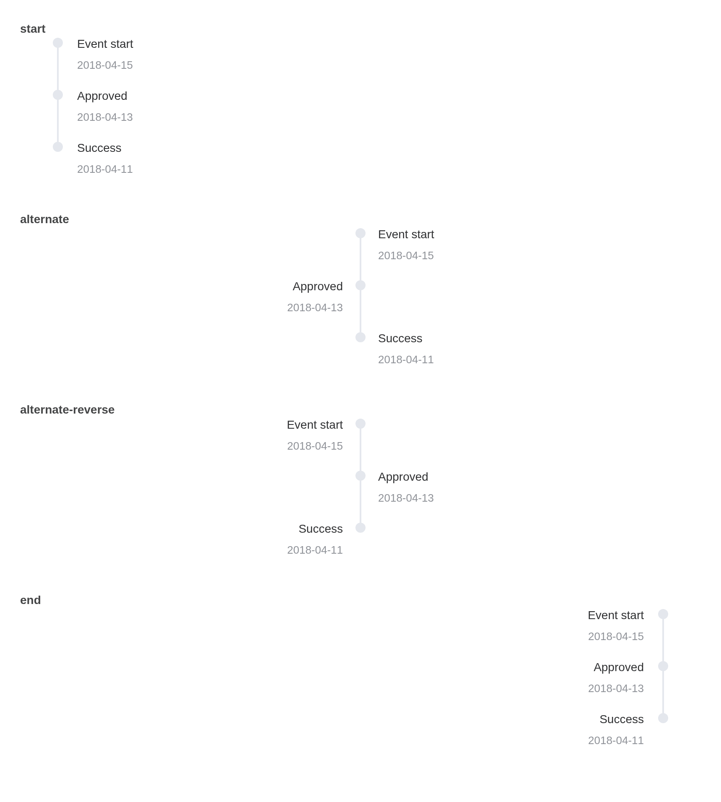
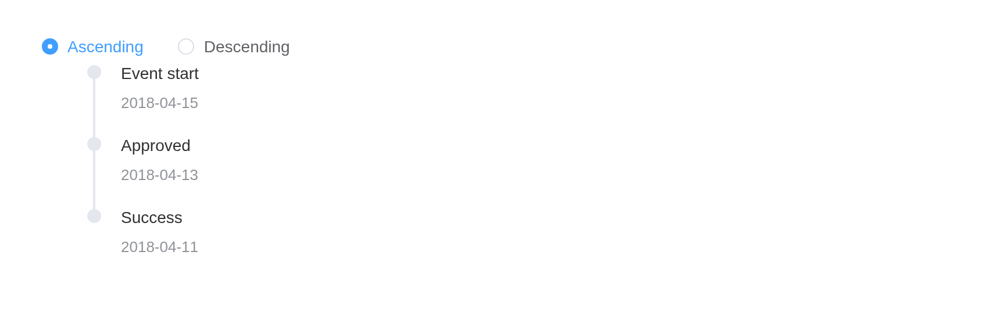

Visually display timeline.
Basic usage
Timeline can be split into multiple activities. Timestamps are important features that distinguish them from other components. Note the difference with Steps.
el_timeline(
"tl",
items = list(
el_timeline_item("Event start", timestamp = "2018-04-15"),
el_timeline_item("Approved", timestamp = "2018-04-13"),
el_timeline_item("Success", timestamp = "2018-04-11")
)
)Mode
Use mode to control the relative position of timeline
and content.
Tip
After 2.13.1,
el-timelineexplicitly sets padding styles. If you have overridden padding styles ofultag in your project, please check to ensure the layout is correct.
mode puts the content after the line
("start"), before it ("end"), or on alternate
sides; the radio buttons set it with
update_el_timeline().
ui <- el_page(
el_radio_group(
"tl_mode_pick",
choices = c("start", "alternate", "alternate-reverse", "end"),
selected = "start",
button = TRUE
),
tags$div(
style = "margin-top: 16px",
el_timeline(
"tl_mode",
mode = "start",
items = list(
el_timeline_item("Event start", timestamp = "2018-04-15"),
el_timeline_item("Approved", timestamp = "2018-04-13"),
el_timeline_item("Success", timestamp = "2018-04-11")
)
)
)
)
server <- function(input, output, session) {
observeEvent(input$tl_mode_pick, ignoreInit = TRUE, {
update_el_timeline(session, "tl_mode", mode = input$tl_mode_pick)
})
}
shinyApp(ui, server)
Custom node
Size, color, and icons can be customized in node.
el_timeline(
"nodes",
items = list(
el_timeline_item(
"Custom icon",
timestamp = "2018-04-12 20:46",
size = "large",
type = "primary",
icon = "MoreFilled"
),
el_timeline_item(
"Custom color",
timestamp = "2018-04-03 20:46",
color = "#0bbd87"
),
el_timeline_item(
"Custom size",
timestamp = "2018-04-03 20:46",
size = "large"
),
el_timeline_item(
"Custom hollow",
timestamp = "2018-04-03 20:46",
type = "primary",
hollow = TRUE
),
el_timeline_item("Default node", timestamp = "2018-04-03 20:46")
)
)Custom timestamp
Timestamp can be placed on top of content when content is too high.
el_timeline(
"stamps",
items = list(
el_timeline_item(
el_card(
tags$h4("Update Github template"),
tags$p("Tom committed 2018/4/12 20:46")
),
timestamp = "2018/4/12",
placement = "top"
),
el_timeline_item(
el_card(
tags$h4("Update Github template"),
tags$p("Tom committed 2018/4/3 20:46")
),
timestamp = "2018/4/3",
placement = "top"
),
el_timeline_item(
el_card(
tags$h4("Update Github template"),
tags$p("Tom committed 2018/4/2 20:46")
),
timestamp = "2018/4/2",
placement = "top"
)
)
)Vertically centered
Timeline-Item is centered vertically.
el_timeline(
"centred",
items = list(
el_timeline_item(
el_card(
tags$h4("Update Github template"),
tags$p("Tom committed 2018/4/12 20:46")
),
timestamp = "2018/4/12",
placement = "top",
center = TRUE
),
el_timeline_item(
el_card(
tags$h4("Update Github template"),
tags$p("Tom committed 2018/4/3 20:46")
),
timestamp = "2018/4/3",
placement = "top"
),
el_timeline_item(
"Event start",
timestamp = "2018/4/2",
placement = "top",
center = TRUE
),
el_timeline_item("Event end", timestamp = "2018/4/2", placement = "top")
)
)Reverse
Use the reverse property to control the order of the nodes.
reverse shows the entries newest first;
update_el_timeline() flips it.
ui <- el_page(
el_radio_group(
"order",
choices = c(Ascending = "asc", Descending = "desc"),
value = "asc"
),
el_timeline(
"tl",
items = list(
el_timeline_item("Event start", timestamp = "2018-04-15"),
el_timeline_item("Approved", timestamp = "2018-04-13"),
el_timeline_item("Success", timestamp = "2018-04-11")
)
)
)
server <- function(input, output, session) {
observeEvent(
input$order,
update_el_timeline(id = "tl", reverse = input$order == "desc")
)
}
shinyApp(ui, server)
API
Element Plus’s tables, and beside each entry where it is in R.
Timeline Attributes
| Element | In R | Description | Type | Accepted | Default |
|---|---|---|---|---|---|
reverse |
reverse |
whether reverse order | 1 | false | |
mode |
mode |
relative position of timeline and content |
2'start' \\| 'alternate' \\| 'alternate-reverse' \\| 'end'
|
start |
Timeline Slots
| Element | In R | Description |
|---|---|---|
default |
default content | customize default content for timeline |
Timeline-Item Attributes
| Element | In R | Description | Type | Accepted | Default |
|---|---|---|---|---|---|
timestamp |
el_timeline_item(timestamp =) |
timestamp content | 3 | ’’ | |
hide-timestamp |
el_timeline_item(hide_timestamp =) |
whether to show timestamp | 4 | false | |
center |
el_timeline_item(center =) |
whether vertically centered | 5 | false | |
placement |
el_timeline_item(placement =) |
position of timestamp |
6'top' \\| 'bottom'
|
bottom | |
type |
el_timeline_item(type =) |
node type |
7'primary' \\| 'success' \\| 'warning' \\| 'danger' \\| 'info'
|
’’ | |
color |
el_timeline_item(color =) |
background color of node | 8 | ’’ | |
size |
el_timeline_item(size =) |
node size |
9'normal' \\| 'large'
|
normal | |
icon |
el_timeline_item(icon =) |
icon component | 10 / 11 | — | |
hollow |
el_timeline_item(hollow =) |
icon is hollow | 12 | false |